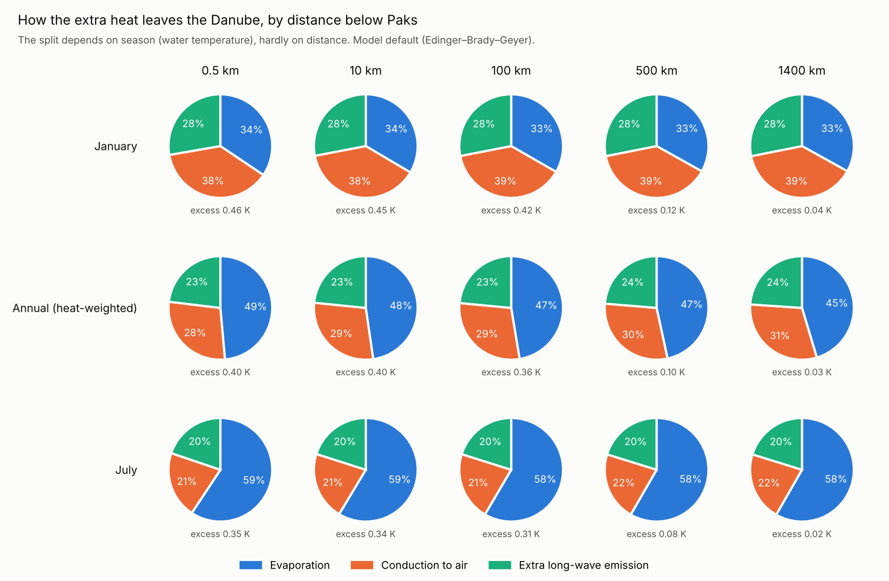
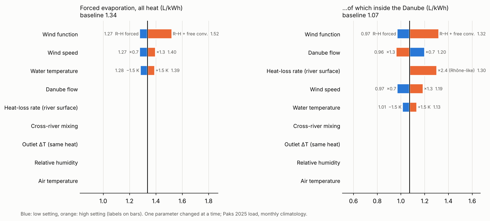
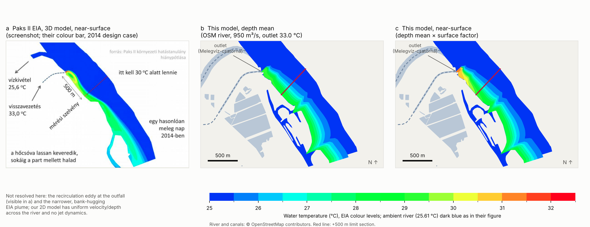

How the model works
A once-through plant like Paks takes about 100 m³/s of Danube water, warms it by roughly 8–9 K in its condensers and returns it to the river. All the water comes back, so the plant seems to use none. But the heat does not stay in the river: over the following hundreds of kilometres it leaves through the water surface. Part of it leaves as evaporation, and that evaporated water is the plant's real water consumption. It is called forced evaporation:
Everything below is the difference between those two states.
A quick estimate
Paks produces about 1 kWh of electricity for every 2 kWh of heat it releases (efficiency about 34%). Evaporating 1 kg of water takes about 2.45 MJ, so 1 kWh (3.6 MJ) of heat could evaporate at most about 1.5 kg of water.
If all the released heat left as evaporation, the plant would use about 2.9 litres per kWh of electricity. In reality only part of the extra heat leaves that way; the rest leaves as conduction to the air and as extra long-wave emission from the warmer water. So:
where is the share of the extra heat loss that goes into evaporation. Working out , and where along the river it happens, is the job of the model.
Surface heat exchange
Per square metre of water, only three heat fluxes depend on the water-surface temperature :
| Symbol | Meaning | Value |
|---|---|---|
| emissivity of water | 0.97 | |
| Stefan–Boltzmann constant | W m⁻² K⁻⁴ | |
| saturation vapour pressure | mbar | |
| vapour pressure of the air | relative humidity × | |
| air temperature | monthly climate normals at Paks | |
| Bowen constant | 0.61 mbar K⁻¹ | |
| wind function | W m⁻² mbar⁻¹, see below |
Sunlight and the long-wave radiation coming down from the sky do not depend on the water temperature, so they are the same with and without the plant and drop out of the difference.
Wind function. The default is the Edinger–Brady–Geyer formula, fitted to measurements on power-plant cooling lakes:
with and the wind speed at 7 m and 2 m (m/s). An alternative, the Ryan–Harleman formula with a free-convection term, can be selected in the explorer. It gives about 14% more evaporation, but it reproduces the measured heat budget of a heated lake less well (see Benchmarks).
The extra heat loss
With the water temperature without the plant and the excess caused by the plant, the extra heat loss and extra evaporation per square metre are
with J/kg. They are evaluated exactly at the local excess temperature, everywhere along the river.
For a small excess the extra loss is proportional to it, , with
The slope roughly triples between 5 °C and 25 °C, so warm water evaporates far more per kelvin of excess than cold water. This makes the evaporation share strongly seasonal.
| Month | Water (°C) | Danube flow (m³/s) | (W m⁻² K⁻¹) | Evaporation share | Forced evaporation (m³/s) |
|---|---|---|---|---|---|
| Jan | 2.5 | 1900 | 16.4 | 33% | 0.49 |
| Feb | 3.5 | 2100 | 17.5 | 35% | 0.52 |
| Mar | 6.5 | 2700 | 19.9 | 40% | 0.59 |
| Apr | 11.0 | 3000 | 22.6 | 46% | 0.68 |
| May | 16.0 | 2900 | 24.3 | 51% | 0.76 |
| Jun | 20.0 | 2900 | 26.6 | 56% | 0.82 |
| Jul | 22.5 | 2500 | 28.3 | 59% | 0.86 |
| Aug | 22.5 | 2000 | 27.8 | 58% | 0.86 |
| Sep | 19.0 | 1700 | 24.8 | 54% | 0.80 |
| Oct | 13.5 | 1600 | 21.3 | 47% | 0.70 |
| Nov | 8.0 | 1800 | 18.9 | 41% | 0.60 |
| Dec | 4.0 | 2000 | 17.1 | 35% | 0.52 |
The size of the excess matters much less. At 20 °C the evaporation share is 55.6% for a 0.1 K excess, 56.8% for 2 K and 60.4% for 8 K. Almost all the heat leaves where the excess is only a few tenths of a kelvin, so the hot core of the plume hardly affects the total. This is also why the outlet temperature and the mixing near Paks barely change the result: the same heat has to leave either way.
Heat transport in the river
Near Paks (first 150 km): a two-dimensional plume. The warm water enters along the right bank and spreads across the river while it is carried downstream:
| Symbol | Meaning | Value |
|---|---|---|
| , | distance downstream, distance from the bank | river width 450 m at Paks |
| , | depth-averaged velocity and depth | m/s, |
| cross-river mixing coefficient | 2.5 m²/s in the first km, 1.0 m²/s beyond | |
| , | density and specific heat of water | 998 kg/m³, 4182 J kg⁻¹ K⁻¹ |
- Start: the cooling water (100 m³/s at excess ) enters as a strip along the right bank, as wide as the river's speed and depth require to carry it, , about 30 m. The strip carries all the rejected heat, .
- Banks: no heat crosses them.
- Solution: stepped downstream in , with steps growing from 5 m near the outlet to 500 m.
A plume released at one bank spreads over the whole width after roughly km. The 2D model runs to 150 km, well past that point.
From 2D to 1D at 150 km. The heat still in the river is the rejected heat minus what has left through the surface so far:
From there on the river is treated as fully mixed, with . The cross-river shape of the plume is lost, but none of its heat.
Further downstream: a fully mixed river. The model follows the excess heat flow , starting from . Tributaries dilute it but do not change it:
| Reach (river km) | Flow relative to Paks | Surface width (m) |
|---|---|---|
| to 1382 (Drava mouth) | 1.00 | 450 |
| to 1215 (Tisza mouth) | 1.27 | 550 |
| to 1170 (Sava, Belgrade) | 1.62 | 700 |
| to 1075 | 2.30 | 900 |
| to 943 (Iron Gate I reservoir) | 2.30 | 1900 |
| to 863 (Iron Gate II) | 2.35 | 1000 |
| to 0 (Black Sea) | 2.75 | 1100 |
For a small excess the decay is exponential, with a length scale
So most of the heat, and most of the forced evaporation, leaves the river hundreds of kilometres below Paks.
Adding it up
For each month , with that month's river flow, water and air temperature, humidity and wind, the forced evaporation is
The last term is the heat that still reaches the Black Sea. It is assumed to leave the sea surface with that month's evaporation share . Leaving it out gives the evaporation from the Danube itself.
The annual value weights the months by their number of days, and dividing by the electricity produced gives litres per kWh:
Plant inputs: 4 × 1485 MW thermal and 4 × 500 MW electric, at the 2025 load factor of 0.92 (16.1 TWh). That gives about 3.6 GW of rejected heat, and with 100 m³/s of cooling water an outlet warming of about 8.7 K.
Where the heat leaves

Within a given month, the split between evaporation, conduction and emission hardly changes along the river. It changes with season. The annual split drifts slightly lower downstream (from about 49% to 45% evaporation) because winter heat, which evaporates less, travels further before it leaves.
Results
| Quantity | Value |
|---|---|
| Forced evaporation | 0.68 m³/s, about 21.6 million m³ per year |
| Per unit of electricity | 1.34 litres per kWh |
| Of which inside the Danube | 1.07–1.30 L/kWh, depending on how fast the river loses heat |
| Share within 10 km / 144 km (Drava) | 1% / 15% |
| Range across wind functions | 1.27–1.52 L/kWh |
For comparison, published values for once-through nuclear plants are 1.51 L/kWh (US DOE) and a median of 1.02 L/kWh with a range of 0.38–1.51 (NREL review). Plants with wet cooling towers evaporate about 2.3–3.4 L/kWh.
Even in a dry summer the forced evaporation is only about 0.1% of the lower Danube's flow, so it does not measurably affect water levels downstream.
Sensitivity

| Parameter | Effect on the total |
|---|---|
| Surface exchange formula | 1.27–1.52 L/kWh |
| Wind speed ±30% | 1.27–1.40 L/kWh |
| Water temperature ±1.5 K | 1.28–1.39 L/kWh |
| Danube flow ±30%, river heat-loss rate | total unchanged; only the part inside the Danube changes (0.96–1.30 L/kWh) |
| Cross-river mixing, outlet temperature, air temperature, humidity | no effect |
Benchmarks
| Check | Measured or published | Model | What it tests |
|---|---|---|---|
| Plume at the +500 m limit section, boat measurement 10 Aug 2013 | 3.4 K | 3.1 K | mixing near the outlet |
| Plume in the Paks II environmental impact study, 950 m³/s, +500 m | 4.1 ± 0.25 K | 4.0 K | mixing near the outlet |
| Length of the +2.5 K zone in the impact study | 11–12 km | 9.9 km | mixing further down |
| Heat-loss split on heated Lake Colorado City, Texas | evaporation 56–58%, conduction 25–29%, emission 13–14% | 60 / 26 / 14% | evaporation share |
| Rhône warming left below three nuclear plants | 0.5 / 0.5–0.7 / 1.0–1.2 °C | 0.69 / 0.90 / 1.60 °C | how fast heat leaves |
| Rhine, Mainz → Koblenz | 1.4 → about 1.0 °C | 1.4 → 1.10 °C | how fast heat leaves |
The measured lake heat budget supports the evaporation share, and with it the total. The Rhône and Rhine lose heat about twice as fast as the model with its estimated river widths. That moves the evaporation closer to Paks but does not change the total.

Panel a: figure from the Paks II environmental impact study supplement, as reproduced by nuklearis.hu. Panels b and c: this model on the OpenStreetMap river outline, same scale and colour levels.
Near the outlet the model's plume is wider and smoother than in the impact study's 3D model, and it does not resolve the eddy at the outfall. The model assumes the same current speed and depth across the river, while the impact study reports the fastest current along the Paks bank. This matters for the 30 °C limit at the +500 m section, but not for the evaporation total: the first 10 km carry about 1% of it.
Limitations
- Climate: monthly averages of air temperature, humidity, wind, water temperature and flow at Paks, applied along the whole Danube. The warmer lower Danube would raise the evaporation share slightly.
- Geometry: downstream river widths and reservoir areas are approximate.
- Not included: heat exchange with the riverbed and groundwater, and the daily cycle.
- Missing test: comparing daily water temperatures at Paks and Baja. The model predicts an annual-mean plant signal of 0.38 K at Baja.
References
- Edinger, J.E., Brady, D.K., Geyer, J.C. (1974). Heat exchange and transport in the environment. EEI/EPRI Report 14.
- Ryan, P.J., Harleman, D.R.F. (1973). An analytical and experimental study of transient cooling pond behavior. MIT Parsons Laboratory Report 161.
- Texas Water Development Board (1966). Effect of an increased heat load on the thermal structure and evaporation of Lake Colorado City, Texas. Report 24.
- EDF / Agence de l'eau Rhône Méditerranée Corse. Étude thermique du Rhône, phases 2–4 (2006–2016).
- International Commission for the Protection of the Rhine. Report 209, Rhine water temperatures 1978–2011.
- MVM Paks II (2015). Environmental Impact Study, chapter 11 and supplements.
- Macknick, J. et al. (2012). Operational water consumption and withdrawal factors for electricity generating technologies. Environmental Research Letters 7, 045802.
- Diehl, T.H. et al. (2013). Methods for estimating water consumption for thermoelectric power plants in the United States. USGS SIR 2013-5188.
- River geometry: Natural Earth; outlet reach © OpenStreetMap contributors.